sitarik@cz:~$ whoami
Učím počítačové sítě – od domácích routerů, které “nějak fungují”, přes Cisco, kde už to musí fungovat, až po servery a clustery, kde to prostě spadnout nesmí.
Chyba 404: Síťařík nenalezen.
…dokud nepřijde do učebny.
…dokud nepřijde do učebny.
sitarik@cz — bash
sitarik@cz:~$
sitarik@cz:~$
TIP DNE
načítám…
načítám…
NETWORK GOSPEL
načítám…